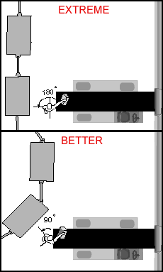

-
Park the cart at an angle to minimize twisting when
transferring baggage to the loading
conveyor
(Fig. 2).
-
All baggage marked "heavy" should be
lifted using more than one person or with a lifting aid.
-
Ensure the use of proper
lifting techniques, with emphasis on lifting problems associated with unsure footing.
-
Use a rotation scheme to rotate employees out of
tasks that are particularly stressful. Rotating will distribute the stressful tasks
equally.
-
Keep walking surfaces
free of ice and snow.
-
Workers should use footwear which maximizes traction for the conditions present.
|

Fig. 2: Parking at an angle
can reduce twisting.
|